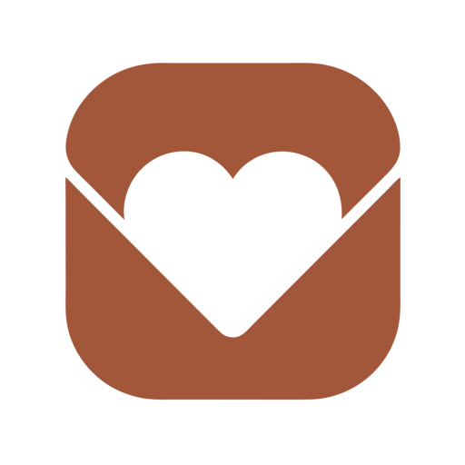

오늘도 사랑해 — 로고 색 변형 · 디벨롭
위 3개는 원본 파일의 픽셀을 그대로 두고 색값만 치환했습니다. 형태는 100% 원본입니다.
① 색만 바꾼 것 — 형태 원본 그대로
원본 · 테라코타
#C17753 — 흰 글자 3.48:1, AA 미달. 강조색으로 못 씁니다.
어두운 배경
48dp
#C17753 · 3.48:1
진한 테라코타
원본 색감을 유지하면서 대비만 확보. 가장 안전한 교체.

어두운 배경
48dp
#A2563A · 5.35:1 AA
딥 틸
차분함으로. 카톡 노랑 옆에서 안 부딪힘. 온기는 줄어듭니다.
어두운 배경
48dp
#0F5F57 · 7.51:1 AA
짙은 감청
대비가 제일 높지만 금융·업무 앱처럼 읽힙니다.
어두운 배경
48dp
#1B3A5C · 11.63:1 AA
⚠️ 원본 파일의 구조 문제
하트와 봉투 플랩이 흰색이 아니라 뚫려 있습니다(투명). 흰 배경에서만 흰색으로 보인 거예요.
왼쪽 “어두운 배경” 칸을 보시면 하트가 배경색으로 비칩니다. 안드로이드 아이콘은 배경이 뭐가 될지 모르므로 흰 면으로 채워야 합니다 — 아래 디벨롭 1번.
왼쪽 “어두운 배경” 칸을 보시면 하트가 배경색으로 비칩니다. 안드로이드 아이콘은 배경이 뭐가 될지 모르므로 흰 면으로 채워야 합니다 — 아래 디벨롭 1번.
② 디벨롭 — 원본 형태에서 기계적으로 파생 (제가 새로 그린 것 없음)
1. 컷아웃을 흰 면으로
뚫린 자리를 흰색으로 채웠습니다. 어떤 배경에서도 하트가 하트로 보입니다.
형태 원본 동일 · 투명부만 흰색
2. 안전영역 대응
배경을 화면 끝까지 채우고 마크를 61% 안으로 축소. 원형 마스크에서 플랩이 안 잘립니다.
적응형 아이콘 규격 통과
3. 마크만 (모노크롬)
배경 없이 마크만 단색. 앱바·테마 아이콘·워터마크용.
단색 실루엣 성립 여부 확인용